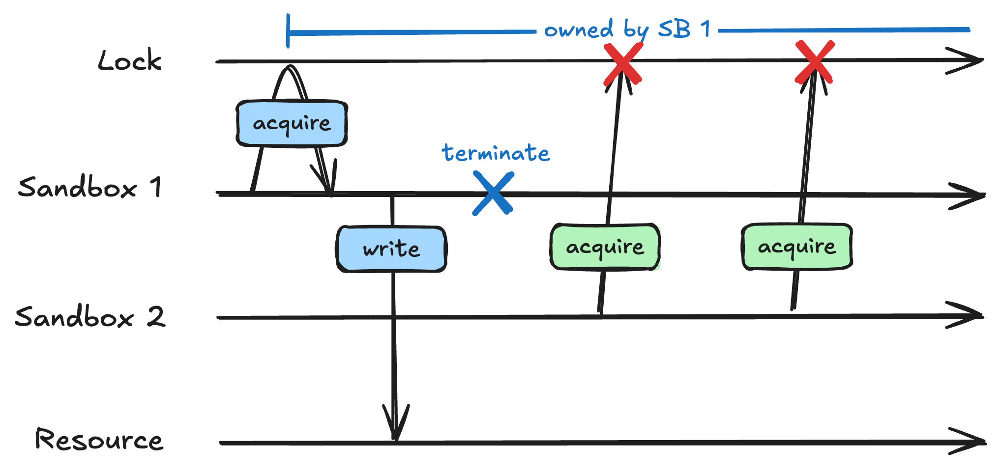
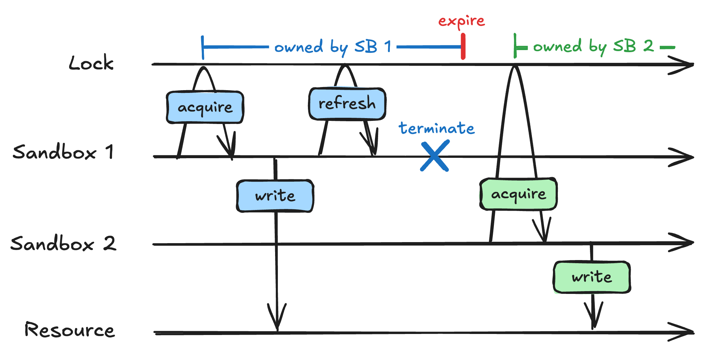
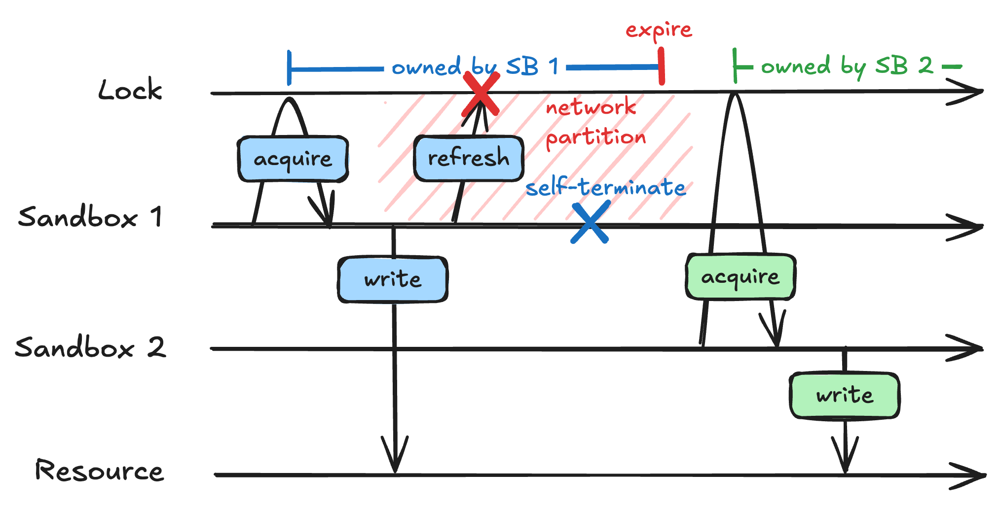
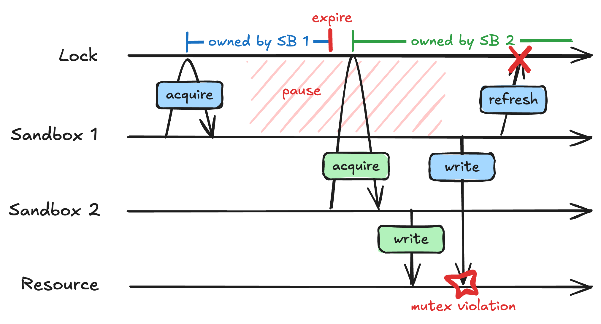
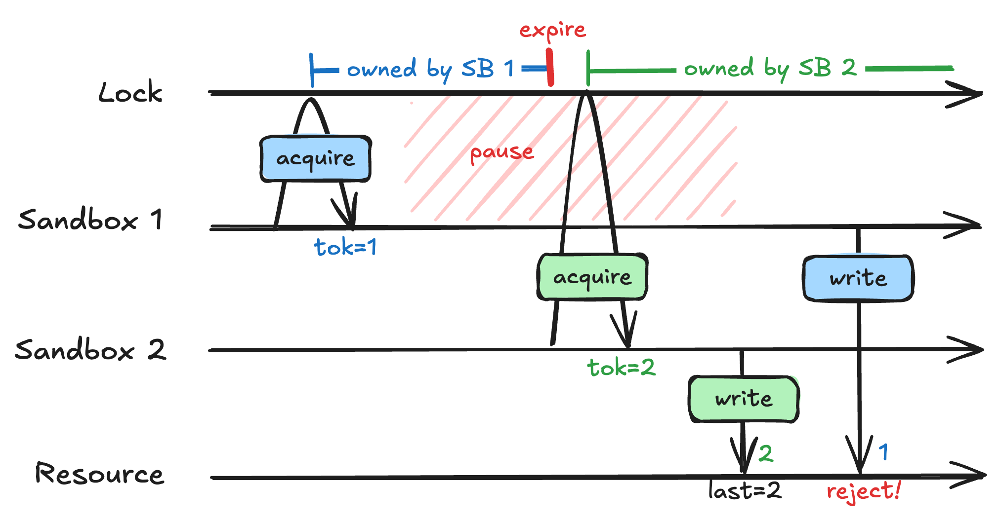
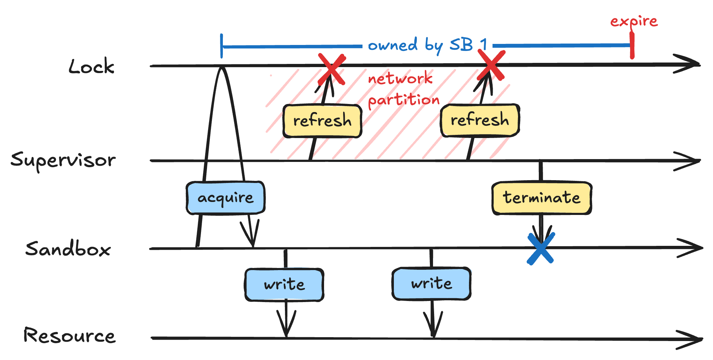
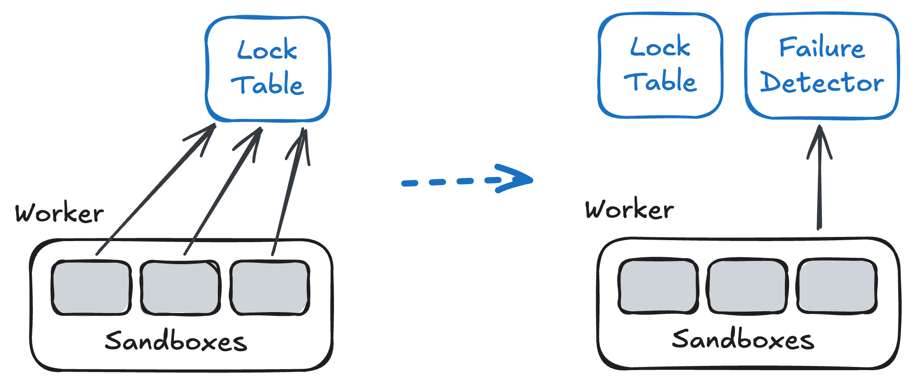
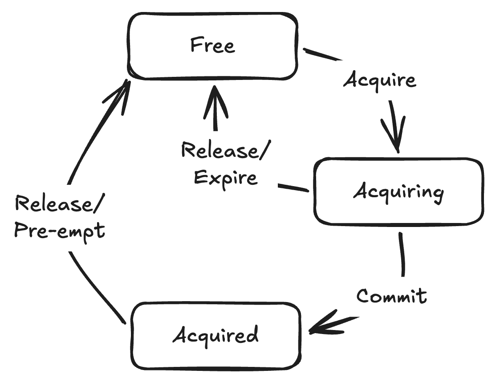
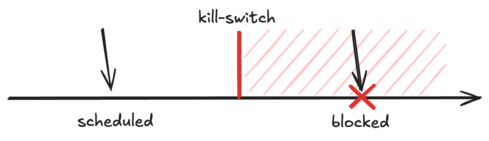

我快结束在Modal的实习了，期间参与了我们新的、大规模可扩展的沙箱架构。其中大部分时间花在构建names上：一个面向沙箱的分布式锁原语。获取一个name等同于获取一把锁，区别是沙箱会一直持有它的name直到终止。
事实证明分布式系统很难做对。取决于假设，有些结果甚至可能被证明不可能。我不得不多次重新设计names：我漏掉一个竞态、需求变了、或者一个决定在下游引起意外的交互。受够了之后，我学了TLA+：一种建立在时序逻辑之上的建模语言：来形式化验证系统的性质。
这篇文章讲述沙箱names背后的设计与过程。也是我的第一篇博客！希望这会是一次有信息量又有趣的阅读：如果不是，我会很在意，请给我反馈。
虽然我思考沙箱已有一阵子，但你应该得到一些背景。退一步：什么是沙箱？
简言之，它是一个安全环境，可以运行不受信任的程序。如今沙箱大量用于运行agent生成的代码，以保护你的机器免受恶意行为（比如rm -rf /）的侵害：例如用于RL rollouts。单次训练运行可能并行拉起几十万个沙箱，所以我们需要处理很大的负载。
分布式系统没有免费的午餐。为了在可靠性和规模上做架构，Modal用一致性换取可用性：即使在数据存储故障的情况下，我们也能继续调度新沙箱，代价是接受最终一致性。熟悉CAP的人会知道，这意味着Modal沙箱占据AP角（实际上我们是PA/EL；最终一致性也让调度延迟保持低，不过这在那篇早前的博客里有更好解释）。
AP对大多数用例都很好，但用户可能想要更强的保证。当涉及互斥时，例如，最终一致性就不够了。
有时沙箱需要对资源的独占访问。agent可能替你订机票，或者RL回合可能与有状态游戏服务器交互。多个沙箱发起非幂等请求会互相干扰。
用一个例子更好解释。假设我有一个长期运行的编码agent在沙箱里工作。我需要它访问有状态资源（如数据库或仓库）。如果这个沙箱的多个实例同时拉起，它们可能互相覆盖。
简单的答案是只为这个agent创建一个沙箱。然而，如果沙箱突然终止，我希望它被重新创建：agent不应该停摆。这比听起来更常见。进程可能崩溃、网络可能分区、AWS实例可能被抢占。每当出错就天真地重建沙箱，很容易导致重复创建。
好吧，听起来这个agent需要一个mutex。
沙箱names充当mutex，但沙箱只能持有一个name，并且持有到终止。Mutex也很简单：原子获取、原子释放。任何事务性数据库都支持。为什么这篇博客这么长？

考虑沙箱获取mutex后立即崩溃、没有释放锁的情况。
这是死锁！通常内核介入，检测到进程崩溃，并抢占锁。但沙箱是分布式参与者，被迫通过不可靠网络通信。你怎么分辨沙箱是崩溃了还是只是数据包延迟？你无法分辨，这让解决这个死锁很难。
话虽如此，分布式锁或多或少是个已解决的问题。有一篇Martin Kleppmann的经典博客讲解了标准方案。让我们逐步建立这个方案、研究它的性质，然后为了性能打破规则。后面会讲到。
我们解决死锁的方式是实现分布式租约。最初获取锁后，沙箱必须持续刷新它，否则它过期。我们把沙箱发送的间歇性ping称为心跳。

但网络仍然不可靠。如果沙箱持续心跳失败怎么办？租约可能过期，允许另一个沙箱获取它。为防止互斥（mutex）违规，沙箱应在心跳失败一段时间后、锁到期之前自我终止。

这够吗？在他的博客中，Kleppmann认为不够。我们不能依赖基于时间的方法（如自终止），因为时钟不可靠和进程暂停。时钟问题确实可以最小化，但不幸的垃圾回收或调度饿死可能让进程暂停无限长的时间。那样的话，我们可能看到mutex违规。

因此分布式租约的最后一块是fencing token。锁维护一个单调递增的计数器，每次获取后递增。当沙箱获取锁时，它收到计数器的值，并作为token传给资源。资源应检查token是否大于等于上次看到的值，否则拒绝写入。

Fencing token对资源上的写入强制全序，是真正正确性所必需的。但fencing并不总是实用：我们常常无法控制沙箱使用的资源，而Modal没有Resource原语。这是有趣的未来工作，但目前：fencing token真的有必要吗？

我们之前看到基于时间的方法不起作用，因为它们不能保证安全。对我们的系统，让我们用基于时间的方法吧！
我保证这不像听起来那么傻。回想最初的假设：时钟不可信、进程可能无限暂停。我们能放松这些吗？单调时钟不会跳回，也不太可能偏斜那么多。此外，我们的supervisor进程（代表沙箱心跳）绝对没有GC。给它高调度优先级并CPU固定其他进程来屏蔽它，它不太可能暂停那么久。
网络分区总是可能发生，但我们用早先的策略处理它们：如果心跳持续失败，supervisor启动kill-switch，在锁过期前终止沙箱。
在这些放宽的假设下，锁应该能工作。但实际系统比上图复杂一些。如果有我们没想到的竞态呢？
设计正确的并发系统很难；行为数量通常随规模超指数增长。对沙箱names，有几次我终于完成设计，却事后在其中发现一个竞态。这对后面讨论的可抢占锁尤其如此，不过连简单的租约也有复杂性。我们尝试形式化它时就会看到。
TLA+ 是一种基于逻辑的规格语言。它由Lamport（也许以Paxos更知名）在90年代创建，但源自更早的开发实用程序验证框架的研究努力。TLA基于模态逻辑（与Modal公司无关），一阶逻辑的扩展，引入两个新算子：□（always，总是）和 ◊（eventually，最终）。有了这两个，我们能表达安全性质（系统总是安全）和活性性质（系统最终取得进展）。
使用TLA+ 涉及编写定义三件事的spec：状态、性质和行为。我写了部分spec用PlusCal：一种编译到TLA+ 但像普通代码的语言：来让事情更容易。下面两个片段你都会看到。一旦spec写完，像TLC这样的模型检查器可以运行，自动验证性质是否成立。
注意许多细节被省略以看清大局。如果这让你困惑，请让Claude填空（或在我的Github上查看）。
我们的分布式租约的状态可以用PlusCal变量定义。例如，我们需要知道锁的所有者（Lock）、租约是否在过期TTL前被刷新（Refreshed）、每个沙箱的状态（Proc）、每个沙箱是否在其临界区（Critical）、以及心跳是否命中网络分区（HeartbeatNetworkFailure）。
参数化我们的假设也很有用。通信可靠吗？时钟可信吗？运行模型检查器揭示哪些性质在哪些假设下成立。
variables
Lock = "NONE",
Refreshed = FALSE,
Proc = [s \in Sandboxes |-> "INIT"],
Critical = [s \in Sandboxes |-> FALSE],
HeartbeatNetworkFailure = [s \in Sandboxes |-> FALSE],
...CONSTANT UnreliableTiming, UnreliableNetworks锁的定义性安全性质是互斥。如果沙箱在临界区，那么它持有锁。或者用TLA表达：
我们是不是漏了什么？你可能会注意到这应该总是成立。也就是说，我们真正应该有的是 ∀s∈S: □(Critical(s)→Lock=s)。而我们在这里做的是优化：告诉模型检查器MutualExclusion是一个不变量，它会比通用时序公式更高效地检查。
MutualExclusion ==
\A s \in Sandboxes: Critical[s] => Lock = s锁的定义性活性性质是无死锁。一种表述可以是所有沙箱最终都获取锁。然而，这假设所有沙箱最终都终止（它们不能永远保持临界）。虽然技术上成立，但沙箱的寿命可能长到我们的模型应把它当作无界的。所以，这是另一种表述：
每当沙箱错误地持有锁（不在其临界区），它最终会进入临界区或释放锁。你可能会注意到上面很多奇怪的语法：~ 是否定，/\ 是逻辑合取，# 是「不等于」，~> 是leads to，「总是如果A那么最终B」的语法糖。总之我们有：∀s∈S: □[(¬Critical(s)∧Lock=s)→◊(Lock≠s)]。
Liveness ==
\A s \in Sandboxes: (~Critical[s] /\ Lock = s) ~> Critical[s] \/ Lock # s最后，回想我们的方法是基于时间的。如果我们有UnreliableTiming，那么我们不能保证互斥！这种情况下，我们希望系统在有界时间内恢复。我们可以把这个性质形式化为：
每当有mutex违规时，违规的沙箱最终自我终止（永久离开临界区）。去掉糖，语句变成：∀s∈S: □[(Critical(s)∧Lock≠s)→◊□(¬Critical(s))]。
还记得上面我不想假设所有沙箱都终止吗？如果是这样，我们会在没有任何恢复机制的情况下免费得到EventualMutualExclusion。建模系统时，人们通常目标是做最少的假设。
EventualMutualExclusion ==
\A s \in Sandboxes: (Critical[s] /\ Lock # s) ~> [](~Critical[s])spec的最后也是最复杂的部分是行为。PlusCal通过修改状态的进程来表示行为：每个进程包含定义哪些动作原子发生、以什么顺序的标签。换言之，一个标签对应模型采取的一个原子步骤，跨进程的标签可以任意顺序交错。
我们的租约有哪些进程？首先想到的是沙箱本身，但实际有2部分：创建流程（沙箱首次调度并获取锁时）和运行中的沙箱进程。我们把它建模为2个独立进程。
另一件事是worker心跳。我们之前看到有一个supervisor进程代表沙箱心跳。用Modal的话说，这个每机器supervisor是worker进程（底层机器是worker）。心跳本身概念上也是2个不同的东西：租约刷新和超时驱动的kill-switch，我们也表示为2个进程。
最后，还有锁过期本身，我们也建模为一个进程。那就有5个进程：
你可能会注意到所有进程都被标记为fair（公平），除了SandboxRunning进程。在PlusCal中，这叫弱公平：一个弱公平进程必须最终有机会运行，只要它没死锁。在我的spec中，任何在有界时间间隔内发生的事必须是弱公平的。既然沙箱终止不保证，SandboxRunning进程不是公平的。
fair process (sandboxcreation \in SandboxProcess("SandboxCreation")) {
Create:
either {
(* Schedule a named sandbox atomically *)
} or {
(* Set name on an existing unnamed sandbox *)
};
}
process (sandbox \in SandboxProcess("SandboxRunning")) {
CriticalSection:
(* The `await` keyword means this label is blocked from running
until the condition evaluates to true *)
await Critical[SandboxId(self)];
Release:
(* Become non-critical and release lock atomically *)
Terminate:
(* Set state to terminated *)
}
fair process (workerheartbeat \in SandboxProcess("WorkerHeartbeat")) {
Heartbeat:
while (TRUE) {
await Critical[SandboxId(self)];
(* Attempt to refresh lease *)
}
}
fair process (workersweep = Process("WorkerSweep")) {
Sweep:
while (TRUE) {
(* Kill sandboxes that fail to refresh lease *)
}
}
fair process (lockproc = Process("LockExpiry")) {
Expire:
while (TRUE) {
(* Expire the lease if not refreshed *)
}
}运行模型检查器，我们看到MutualExclusion很容易被违反。我们还没有建模任何时间依赖！心跳应该在kill-switch超时之前发生，kill-switch应该在锁过期之前发生。
模拟时间的一种常见方式是用一个表示离散时间步的计数器。那可能变得复杂，所以我只建模依赖本身：如果事件A在事件B之前发生，我们在B中await A的发生。这看起来像存储事件是否已发生：
然后定义时间依赖：
通过与UnreliableTiming取析取，我们可以参数化这些时序关系是否真的成立。
一个特别值得注意的时序关系。在创建流程中，我们先获取name再调度沙箱。因此锁TTL应大于最大调度时间，否则它可能在我们脚下过期。那真的会咬我们！调度器（因为是最终一致的）可能调度到满的worker；那样它会用相当长的截止时间指数退避重试。TLA帮助确保我们显式建模这个关系：
variables
...
LastHeartbeat = [s \in Sandboxes |-> FALSE],
LastSweep = [s \in Sandboxes |-> FALSE];(* The \/ represents logical disjunction *)
HeartbeatBeforeSweep ==
\/ \A s \in Sandboxes: Critical[s] => LastHeartbeat[s]
\/ UnreliableTimingAcquiringCompleteBeforeLockExpiry ==
\/ \A s \in Sandboxes: ~Acquiring[s]
\/ UnreliableTiming回想我们还有UnreliableNetworks作为参数。如果这个开关为真，网络调用应该被允许失败，比如心跳时：
fair process (workerheartbeat \in SandboxProcess("WorkerHeartbeat")) {
Heartbeat:
...
LastHeartbeat[SandboxId(self)] := TRUE;
either {
HeartbeatNetworkFailure[SandboxId(self)] := FALSE;
(* Attempt to refresh lease *)
} or {
await UnreliableNetworks;
HeartbeatNetworkFailure[SandboxId(self)] := TRUE;
(* Don't do anything *)
};
...
}如果我们有UnreliableTiming，那么我们不能保证MutualExclusion。我们需要某种恢复机制，仍然确保EventualMutualExclusion。
为实现这一点，沙箱如果意识到租约被另一个沙箱拥有，就自我终止。这可以每次心跳发生：
现在用UnreliableTiming运行模型检查器显示MutualExclusion被违反，但EventualMutualExclusion成立。
fair process (workerheartbeat \in SandboxProcess("WorkerHeartbeat")) {
Heartbeat:
...
if (Lock = SandboxId(self)) {
Refreshed := TRUE;
} else {
Critical[SandboxId(self)] := FALSE;
Proc[SandboxId(self)] := "TERMINATED";
}
...
}太好了：我们有一个在给定假设下可验证正确的租约。虽然设计简单，验证仍帮助我们发现了我们需要mutex违规恢复机制、以及锁超时应超过调度延迟。

然而，考虑扩展命名沙箱数量时会发生什么。每个沙箱刷新时做一次事务性写入，造成很高的稳态负载，可能超过单个数据库节点能处理的。通常，我们会分片锁表并按name键控。但那可能比我们实际需要的更贵！
做个思想实验：与其让锁过期，不如让锁在所有者终止时可抢占？那样我们可以去掉心跳。在分布式系统中，这称为故障检测器。不幸的是，完美的不存在。故障检测器必须在完整性（所有沙箱故障都被报告）和准确性（我们从不报告虚假故障）之间选择。对我们来说，死锁永远不可接受，所以任何故障检测器都必须以不准确性为代价追求完整性：和我们的租约一样。
不是没有希望：有一个技巧我们可以用，采用故障检测器模型。与其O(沙箱数) 的liveness更新，我们可以缩到O(worker数) 的liveness更新。如果worker活着，我们可以直接问它沙箱是否在运行。因此检测沙箱故障归结为检测worker故障！
此时，你的竞态条件警报应该响起来了。如果锁在我们完成调度前被抢占怎么办？如果我们正好在liveness过期前调度到worker怎么办？如果……？
首次设计沙箱names时，我们实际上从可抢占锁开始。这被证明很有挑战性：我一直碰到没想到的竞态，所以很难被说服它能工作。TLA正是为此而生：它也做到了！例如下面第三个模式解决的竞态，就是被我们的模型检查器抓住的。
但形式化设计的过程困难又缓慢。而且，某些设计模式：正确性所必需的：是有争议的。对初始实现，这不值得。标准租约就足够了。
尽管如此，我还是希望可抢占设计成为我们万一需要扩展时的选项。本节我介绍构建一个可用可抢占锁的三个模式。TLA形式化已经复杂到不再有信息量，所以我省略它作为读者的练习（或者再次在我的Github上查看）。
在我们的创建流程中，我们希望锁获取和沙箱创建原子地表现。否则，我们可能获取锁、在调度沙箱前抢占它、然后立刻造成mutex违规。

标准做法是2-Phase Commit。锁有两个「已占用」状态：一个中间的acquiring（获取中）状态，和一个已提交的acquired（已获取）状态。在acquiring状态，锁不能被抢占。为防止死锁（例如获取后立即分区且我们未能调度沙箱），未提交的锁会在某个TTL后过期。
一个自然的问题：如果提交失败怎么办？要真正让它工作，提交需要通过心跳发生。一旦确认，沙箱可以停止心跳。最后，如果提交持续失败，那么kill-switch应在锁过期前激活。
回想抢占流程：如果故障检测器报告worker无响应，那么锁是可抢占的。否则，worker是活的，我直接问它锁所有者是否仍在运行。
这需要知道沙箱在哪个worker上，并把该信息存储在我们的锁表里。我们事先不知道这个信息：控制平面在调度沙箱前获取锁。因此，worker信息应通过提交发送。
kill-switch通过终止其liveness即将过期的worker上的所有沙箱来防止mutex违规。如果我们之后立即调度一个沙箱到它上面呢？

为防止又一个mutex违规，我们绝不应在worker的kill-switch启动后、直到它发送成功心跳并刷新其liveness之前，在其上创建命名沙箱。
这可以用两种方式：要么调度器跟踪这个，要么worker做。让worker做更安全：可以想象一个数据包延迟把调度请求一直保持到kill-switch触发，例如。
然而，同样的情况有worker类比！也就是说，worker收到创建新命名沙箱的请求，但线程被抢占，只在kill-switch已经触发后才恢复。由此可知，命名沙箱创建和kill-switch应该同步：我有没有提过这篇博客是关于锁的？
分布式系统是关于权衡的。我们在CP和AP之间、liveness和safety之间、持久性和延迟之间选择。
有时为了系统最合理而打破规则是可以的。然而，有时我们应该只做最简单的事。虽然可抢占锁是个有趣的思想实验，但增加的复杂性可能不值得。今天，沙箱names建立在一个普通的旧租约上。
无论我们做什么选择，我们绝不想要的是意外后果。假设和交互应该是显式的，形式化它们的最好方式是数学。
进这个实习时，我对分布式系统几乎一无所知。过去4个月我成长巨大，通过战火的考验，有机会端到端拥有系统并把它们带到现实。感谢阅读，希望你有学到东西！
Scott :)
参考：https://scotthao.com/writing/distributed-locks